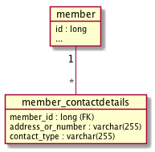
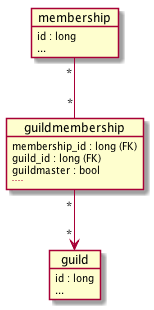
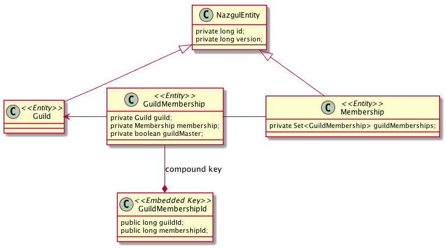

Example: JPA annotations for collections within Entities
In trying to hide certain underlying database complexities, the JPA specification introduces a set of quite complex annotations which can sometimes be difficult to relate to the corresponding database constructs. These complexities tend to manifest themselves when object oriented mechanics are not immediately translatable to relational database structures, such as when an Entity class contains collections of data.
Relational databases cannot inherently represent collections - each cell within a database table can normally only contain a single value. Instead, relational databases use (foreign) keys to relate a single row within a table (holding the entity state) to a set of rows within another table (holding the data within the collection). Since relational database table cells can generally only contain a single value, we arrive at slew of scenarios depending where Primitive and and Entity data types are used:
- Primitive keys, Primitive values. Use @ElementCollection, @MapKeyColumn and @Column annotations.
- Primitive keys, Entity values. Use @ElementCollection and @MapKeyJoinColumn annotations.
-
Entity keys, Entity values. Use @OneToMany or @ManyToMany and @MapKeyJoinColumn annotations.
// // MapKeyColumn used for basic types of Map keys // MapKeyJoinColumn used for entity types of Map keys // // If generics are not used in the Map declaration, // use @MapKeyClass to define the key type, and // targetClass property of @ElementCollection to // define value type. //
Scenario 1: Map of primitive data types
When the collection (or Map) contains primitive values (i.e. not objects/entities), a single cell can contain the key or value. Therefore, the JPA provider needs only create one extra table to manage the collection. An example of this is a Map relating String keys to String values which is realized as follows in a database:

The extra table created to hold the values within the collection is called member_contactdetails - and its name is given to the JPA provider in the @CollectionTable annotation. Summarizing the relevant JPA annotations to create the table structure above:
| Annotation | Example | Description |
|---|---|---|
| @ElementCollection | @ElementCollection | Tells the JPA provider that a collection or map should contain only primitives / elements (i.e. no entities). |
| @CollectionTable | @CollectionTable(name = "member_contactdetails") | Defines the name of the database table where the Map values are stored |
| @MapKeyColumn | @MapKeyColumn(name = "contact_type") | Defines the name of the column where the Map's keys are stored |
| @Column | @Column(name = "address_or_number") | Defines the name of the column where the Map's values are stored |
the name of the Map’s key column is contact_type which is supplied in the annotation @MapKeyColumn, and and value column’s name address_or_number is given in the @Column annotation. Finally, the @ElementCollection annotation is used to let the JPA provider know not to create any additional synthetic tables. The resulting annotated JPA code is shown below:
@ElementCollection
@CollectionTable(name = "member_contactdetails")
@MapKeyColumn(name = "contact_type")
@Column(name = "address_or_number")
private Map<String, String> contactDetails;
Scenario 2: (Sensibly named) Collections of Entities
When the collection (or Map) contains entities (i.e. not primitive values), a single cell can not contain the key or value. Therefore, the JPA provider needs to create two extra tables to manage the collection. The first of these two tables is frequently known as a “jump table” in database lingo, exemplified by a table named GuildMembership in this example. Imagine that members in a Society can be part of one or many Guilds, and that each Guild must have at least one guildmaster. The GuildMembership table links Members to Guilds, and adds some information indicating who is a guildmaster to each relationship row. We can model this is several ways; one of these ways is illustrated below:

The Membership entity class has a Set of GuildMemberships, each of which relates to a Guild and indicates if the GuildMembership in question is the guild master. The collection in the Membership class indicates that the GuildMembership class’s field membership is used to create the collection:
@OneToMany(mappedBy = "membership", fetch = FetchType.EAGER, cascade = CascadeType.ALL)
private Set<GuildMembership> guildMemberships;The GuildMembership entity has a compound primary key, which consists of a pair of primary key values from the Guild and Membership tables. For this to work, JPA requires that the key of the GuildMaster table is represented by a separate class containing each pair of primary keys. The corresponding java class diagram of the relation above indicates that the GuildMembership is a JPA entity that uses a compound key instead of a plain one:
